Episode 04
我正在忘記自己
20 頁完整篇 V1
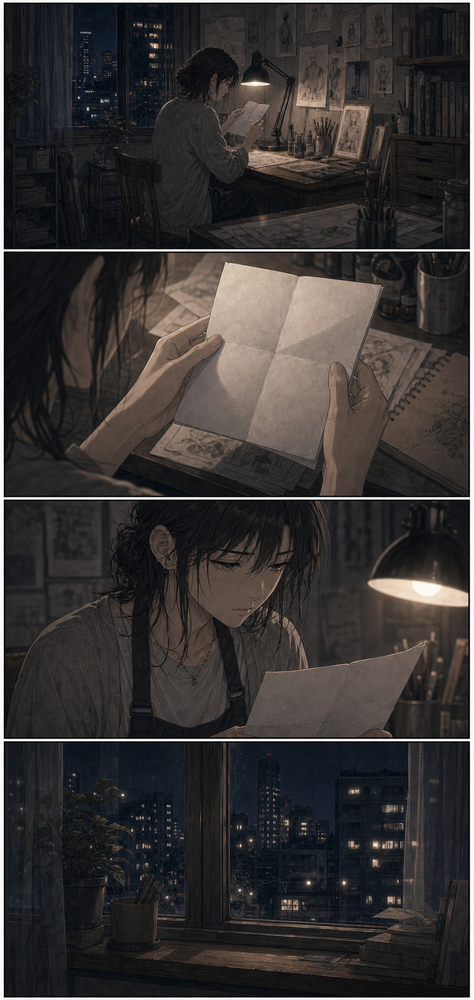
你真的忘了啊。
有些忘記，不會馬上讓人消失。
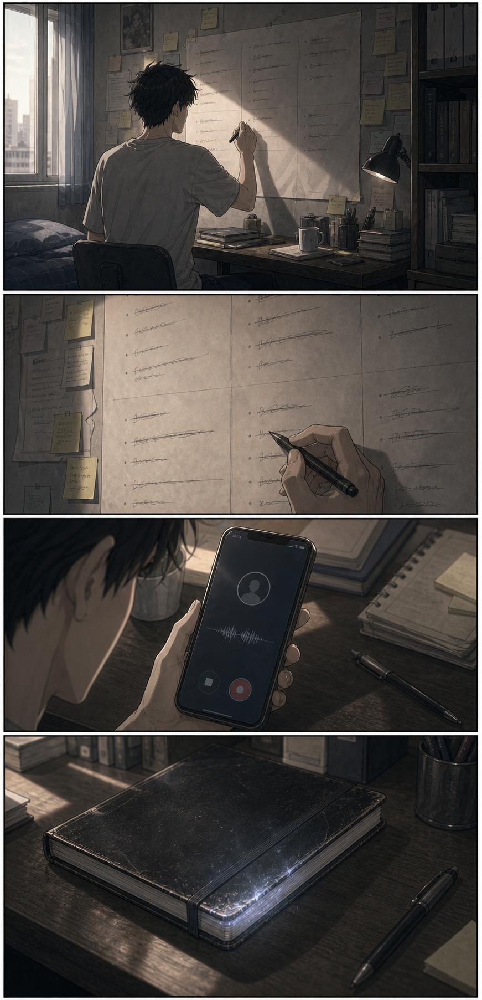
林澈，二十二歲，住在台北。
喜歡……
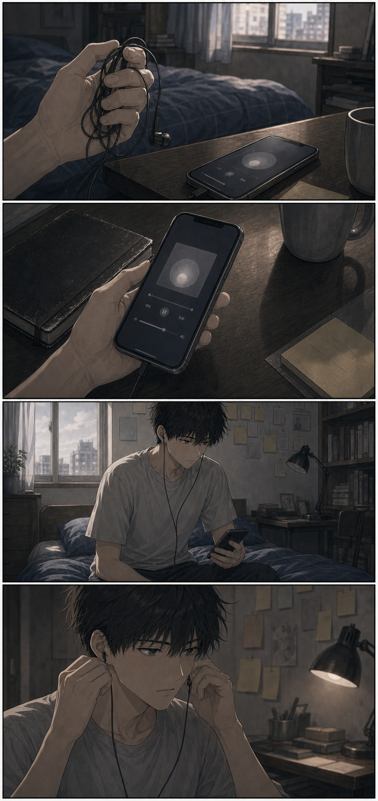
我知道我以前很喜歡這首歌。
但我已經想不起來，喜歡它的感覺。
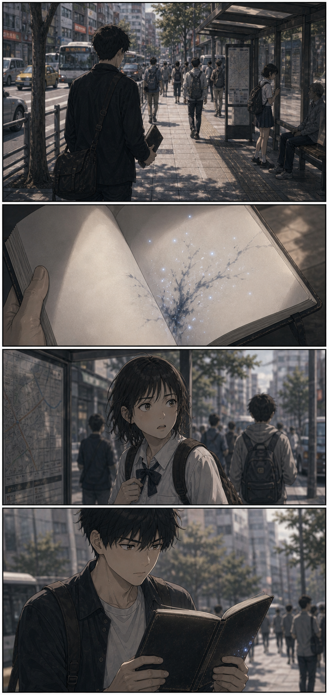
我想把那張准考證找回來。
如果只是小事，應該沒關係。
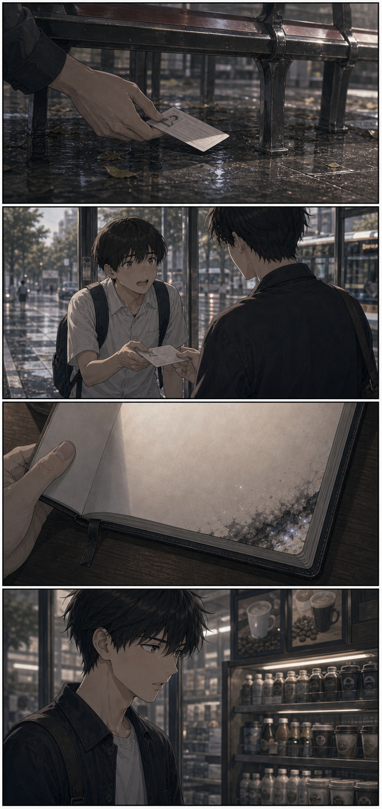
謝謝！真的謝謝你！
我忘記了平常都買哪一種咖啡。
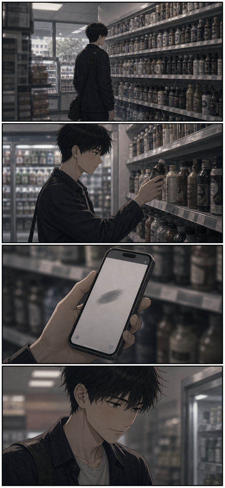
只是咖啡而已。
我這樣告訴自己。
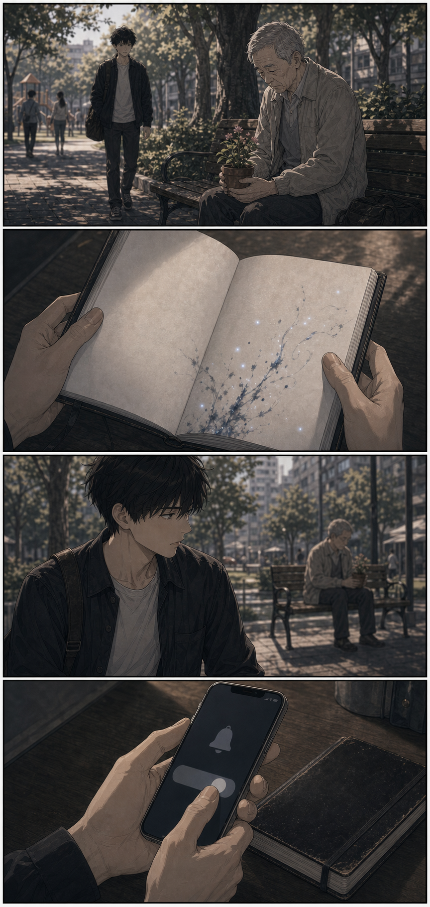
我想讓她看見今天的花。
這也只是小事。
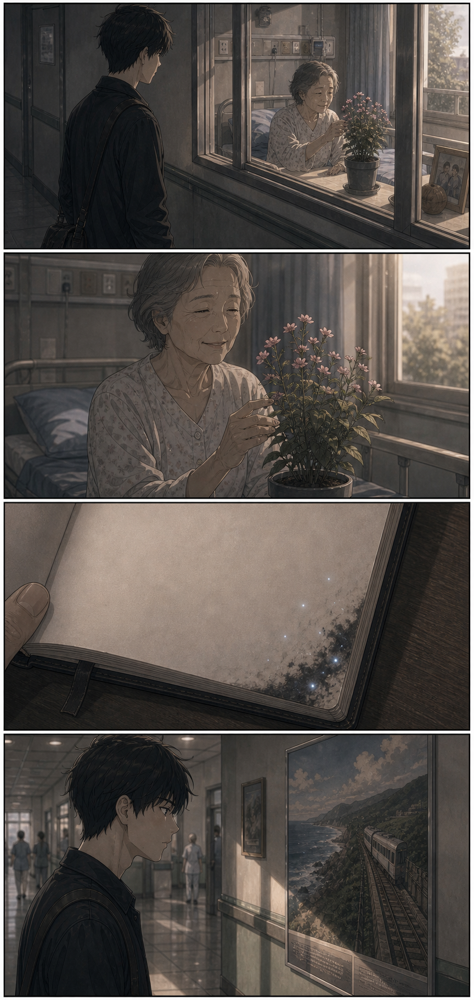
我忘記了一個想去很久的地方。
那個地方曾經讓我撐過很多天。
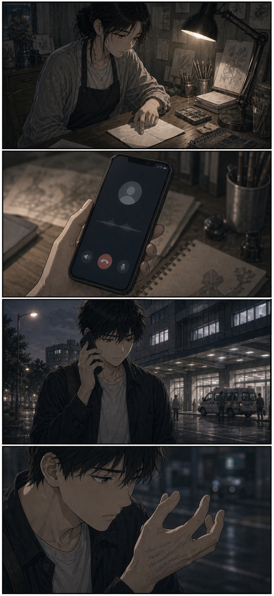
你今天在哪？
我也不太確定。
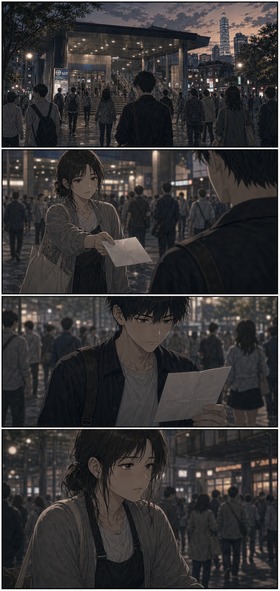
你記得這張紙嗎？
我寫的？
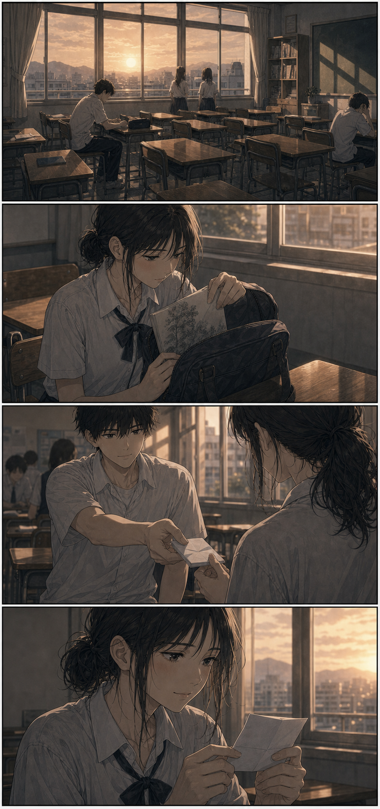
那時候，是你先看見我的。
在我還不敢承認自己想畫畫以前。
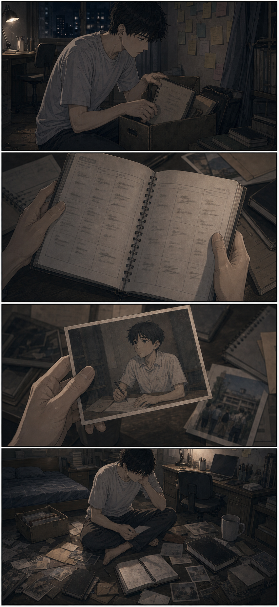
我以前……想做什麼？
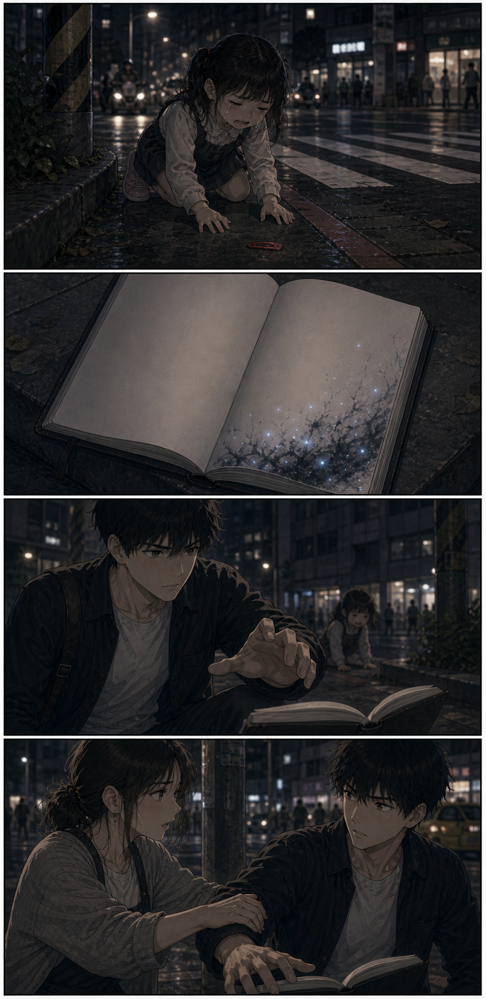
我想找回媽媽送我的髮夾。
不要。
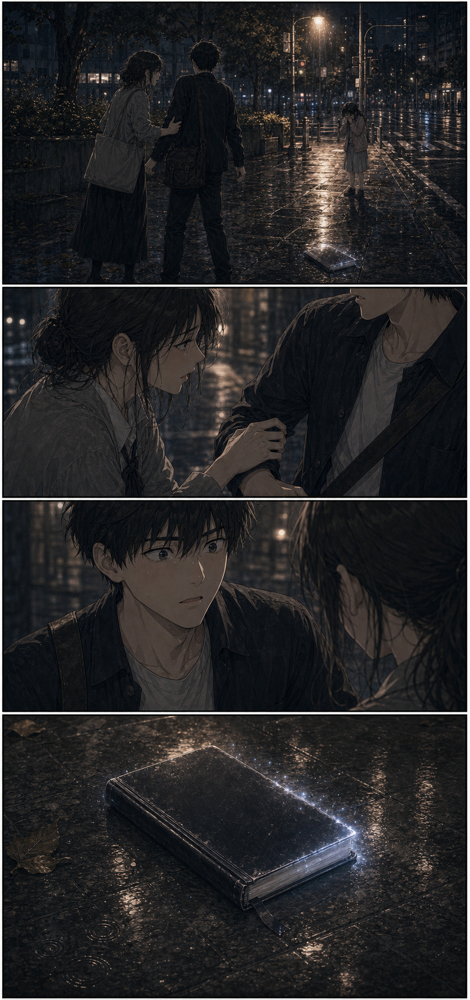
她只是在找髮夾。
你也只是在一點一點不見。
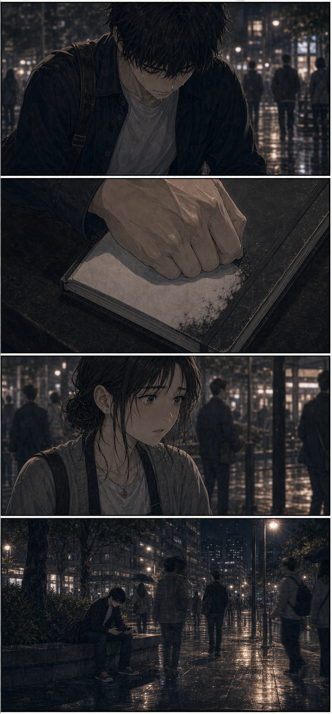
如果我連這個都不做。
那我還剩什麼？
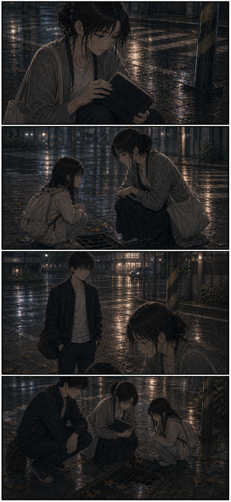
幫人不一定要用那本東西。
你先站在這裡就好。
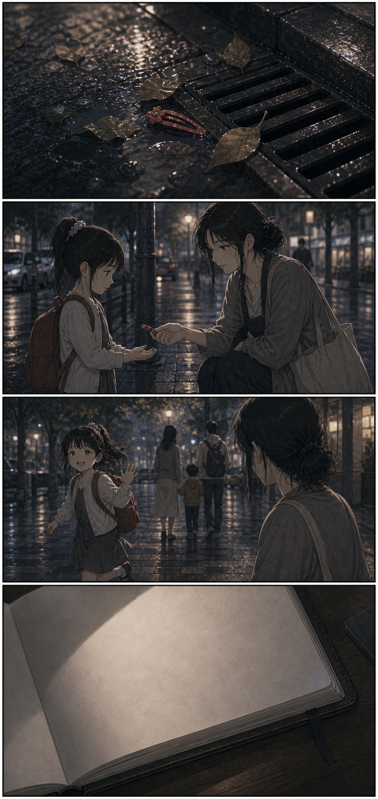
願望沒有被備忘錄完成。
可是那個孩子還是笑了。
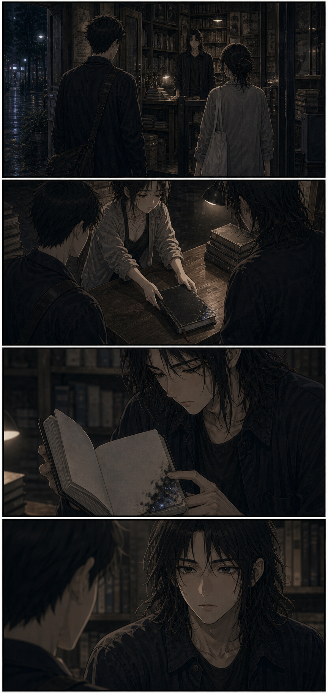
你以為失去的是記憶。
其實它先拿走的是你和自己的關係。
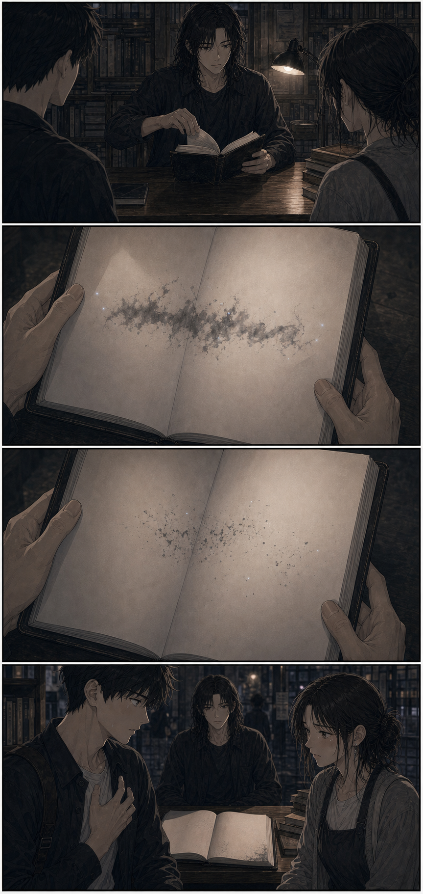
如果你繼續把自己當成代價。
下一個被忘記的，可能是你的名字。
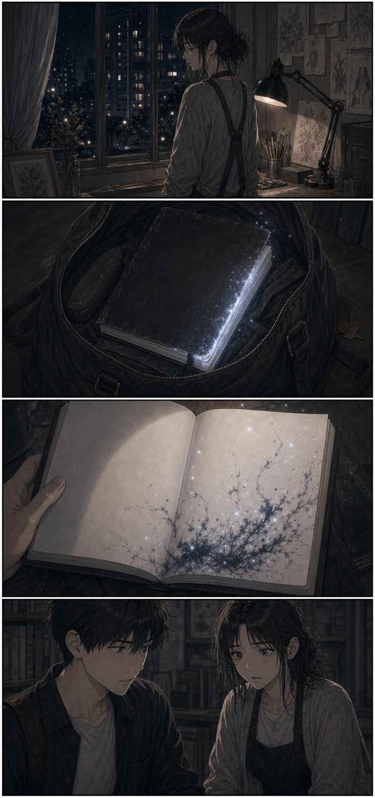
我希望他不要再為我--
這一次，願望終於開始寫下來。